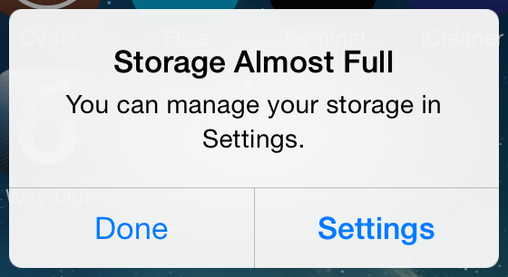
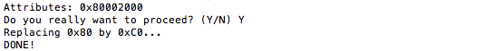
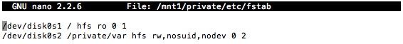
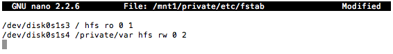
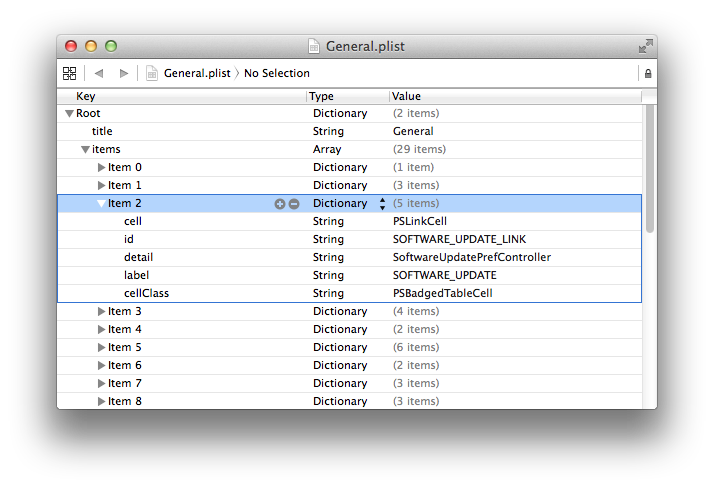
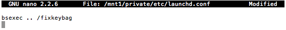

Modifying filesystems
After we successfully restored RootFS, we need to make few changes: move /private/var/* to Data-partition, patch fstab, install fixkeybag, add bootchain files, remove OTA daemons and cope with data-protection issuesMoving /private/var/*
Unmount /dev/disk0s1s4 if it was mounted:umount /mnt2
Mount System partition:mount_hfs /dev/disk0s1s3 /mnt1
This message will immediately appear on device's screen:
Now your tactic will depend on first iOS version
For pre-iOS 9
Regenerate HFS on second partition, but with -P flag now:/sbin/newfs_hfs -s -v Data -J -P -b bsize -n a=bsize,c=bsize,e=bsize /dev/disk0s1s4
Mount it:
mount_hfs /dev/disk0s1s4 /mnt2
Move /private/var/* to /mnt2:mv -v /mnt1/private/var/* /mnt2
Remove all files, their contents will be destroyed anyway due to no-effaceable-storage Device Tree patch we'll make in the next part. Directories and symlinks must be left alone though:rm -rf /mnt2/log/asl/SweepStore
rm -rf /mnt2/mobile/Library/PreinstalledAssets/*
umount /mnt2
For iOS 9+
There is a nuance in iOS 9's data-protection model - if you mount protected (generated with -P flag, as we have done for pre-iOS 9) HFS volume, it won't ever mount on previous OS versions. I've found workaround - first, we'll create and mount unprotected volume, then perform required modifications and after it convert volume to make it protected. Read my tiny write-up for more information about conversion and volume protection's purposeSo, let's start
Recreate HFS on second partition, but without -P flag:
/sbin/newfs_hfs -s -v Data -J -b bsize -n a=bsize,c=bsize,e=bsize /dev/disk0s1s4
Mount it:
mount_hfs /dev/disk0s1s4 /mnt2
Move /private/var/* to /mnt2:mv -v /mnt1/private/var/* /mnt2
Remove all files, their contents will be destroyed after conversion anyway:rm -rf /mnt2/log/asl/SweepStore
rm -rf /mnt2/mobile/Library/PreinstalledAssets/*
umount /mnt2
Convert it using NoMoreSIGABRT to make it protected:NoMoreSIGABRT disk0s1s4
Never mount it again
Patching fstab
We have to patch this file to make second iOS mount /dev/disk0s1s3 as root filesystem (/) and /dev/disk0s1s4 as /private/var:nano /mnt1/private/etc/fstab
Turn this...
...to this

Then press Ctrl+O to save changes and Ctrl+X to exit nano
Removing OTA daemons
That would be really strange if you want to update your newly installed iOS 6, so it's better to remove OTA daemons to prevent waste of disk space and annoying notifications. Also, OTA won't work properly anywayDelete following files:
rm -rf /mnt1/System/Library/PrivateFrameworks/MobileSoftwareUpdate.framework/Versions/A/Resources/softwareupdated /mnt1/System/Library/PrivateFrameworks/SoftwareUpdateServices.framework/Support/softwareupdateservicesd /mnt1/System/Library/CoreServices/OTACrashCopier /mnt1/usr/libexec/OTATaskingAgent
Remove this array (it's usually third) from /mnt1/Applications/Preferences.app/General.plist. Software update cell will disappear from Settings app:
Installing fixkeybag
Important note: I highly recommend to test no-effaceable-storage patch first and only after install it. If you'll fail with this patch, fixkeybag will destroy your first iOS, so you will be forced to restore. We'll talk about patch and its purpose in next partfixkeybag - tiny program which generate new system keybags by invoking function from MobileKeyBag.framework, just like native restore daemon does. Without system keybag iOS won't start. To learn more about system keybags appointment and whole iOS data-protection model read this
Download fixkeybag from GitHub, build it and copy to /mnt1. Or simply copy it from dualbootstuff package:
cp -a /usr/share/dualbootstuff/fixkeybag /mnt1
Don't forget about UNIX permissions, they should be 755Then create /mnt1/private/etc/launchd.conf:
nano /mnt1/private/etc/launchd.conf
...with following contents
Press Ctrl+O to save changes and Ctrl+X to exit nano
Packing baseband firmware
If you have iPhone 4S or newer device (excluding iPods and Wi-Fi-only iPads, obviously), you have to pack baseband files into ZIP-archive and copy it to second OS'es root filesystemFirst, go to original bbfw directory:
cd /usr/local/standalone/firmware/Baseband/MavX/
Create directory hierarchy on /mnt1:
mkdir -p /mnt1/usr/local/standalone/firmware/Baseband/MavX
ZIP bbfw:zip -r0 /mnt1/usr/local/standalone/firmware/Baseband/MavX/MavX-personalized.zip *
Adding bootchain files
Since we'll use OTA routines to untether our dualboot, we have to place Apple logo, Device Tree, ramdisk and kernelcache (as decrypted IMG3 containers, not raw files, obviously) at root directory of third partitionAs I mentioned somewhere before, xpwntool often produce broken IMG3 files (especially kernelcaches and logos) in my case. So I'll use reimagine instead, because I've never had any issues with it
In this part, we'll only decrypt kernelcache, ramdisk and logo. Device Tree requires patching and we talk about it in the next part
Let's begin
Decrypt Apple logo:
reimagine original_logo applelogo -iv iv -k key
Decrypt ramdisk:reimagine original_ramdisk ramdisk -iv iv -k key
Decrypt kernelcache:
reimagine original_kernelcache kernelcache -iv iv -k key
Now send decrypted files to device (to /mnt1). Make sure you gave exactly same names to files as I gave in commands above (applelogo, ramdisk, kernelcache)